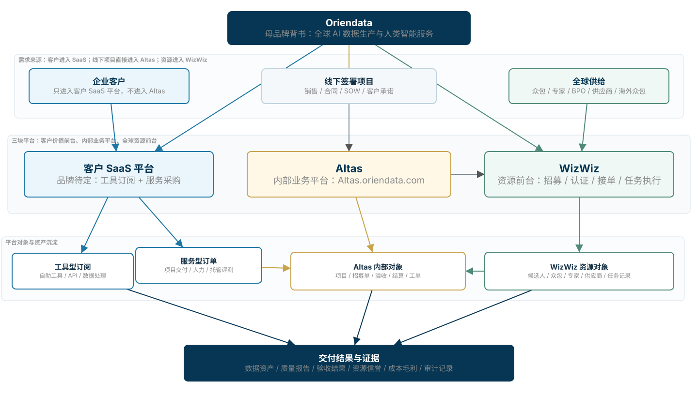

Oriendata 三平台业务架构报告
Oriendata 的全球业务由三类平台协同承载：客户侧 AI 数据服务平台负责工具订阅、服务采购与交付可视化；Altas 作为海外内部业务平台聚合线下签署项目、SaaS 服务订单和自运营交付；WizWiz 面向全球众包、专家、BPO 与供应商，承接招募、认证、接单和任务执行。
客户 SaaS 平台
AI Data Services Platform工具订阅 + 服务采购
面向企业客户销售 AI 数据生产工具和服务，包括数据处理、标注采集、Eval 工作台、人力资源服务、托管评测、数据包和 Agent HITL。
Build the data behind reliable AI.
内部业务平台
AltasAltas.oriendata.com
聚合所有 Oriendata 自运营项目：线下签约项目、SaaS 服务订单、内部交付项目、招募需求和供应商/BPO 协作。
Operate every managed delivery.
众包招募平台
WizWizwizwiz.ai / joinwizwiz.com
面向众包、专家、BPO、供应商和海外资源，负责招募、认证、培训、接单、执行、申诉、支付和信誉沉淀。
Global tasks. Verified skills. Fair rewards.
三平台关系：客户前台、内部业务中枢与全球资源前台协同运转

客户体验集中在 SaaS 平台，包括工具、服务目录、项目状态和交付证据；Altas 管理内部经营对象，沉淀项目、招募、BPO、验收、结算和工单；WizWiz 负责资源侧招募、认证、任务执行和信誉记录。
测试环境观察：现有平台已经是“内部运营 + 资源执行”混合后台
平台数据页显示进行中项目数量，说明系统已承载项目生产运营看板。
进行中的标注任务数量，任务类型还包括采集、质检、清洗和人力派遣。
平台数据页显示总人数，并区分企业内部团队、供应商、众包团队、海外众包和自营团队。
验收单列表数量，包含验收轮次、进度、正确率、驳回次数、验收人员和详情。
| 观察到的模块 | 典型对象/字段 | 对架构的含义 |
|---|---|---|
| 项目列表 | 项目 ID、项目拥有者、客户代码、Workday 编号、成本中心、项目描述、访问控制。 | Altas 应承接项目经营对象，而不是客户前台；它需要管理客户承诺、成本中心、PM 权限和项目访问。 |
| 我的任务 | 任务名称、任务类型、计费标准、状态、发布时间、剩余条目、指定条目、标注要求、执行任务。 | 现有系统已经把资源执行侧和内部任务管理合在一起；全球化时应拆清 WizWiz 资源前台和 Altas 内部管控。 |
| 验收 | 验收单名称、项目编号、验收轮次状态、验收进度、正确率、驳回次数、提交/完成时间、验收人员。 | Altas 的核心不是“后台配置”，而是质量验收、返工、驳回和客户交付证据的内部治理。 |
| BPO 与供应商 | BPO 人员、BPO 任务、供应商列表、项目需求列表、投诉管理。 | Altas 应聚合 BPO/供应商交付，WizWiz 则沉淀资源端资料、任务记录和履约信誉。 |
| 平台数据 | 项目生产、众包业务、用户分析、进行中任务、人力情况、提交条数、工时、工单、IM 消息。 | 平台已有运营数据底座，SaaS 的价值定价和客户可见报告可以从这些内部证据中抽象出来。 |
三平台业务边界：前台销售、内部交付、资源供给必须分开
| 平台 | 面向用户 | 核心边界 | 核心功能/对象 | 边界治理 |
|---|---|---|---|---|
| AI Data Services Platform | 企业客户、AI Labs、模型公司、Agent 团队、车企、金融、医疗、出海 AI 团队。 | 客户 SaaS 前台，既卖工具，也卖服务。工具型订阅主要在 SaaS 内闭环；服务型订单转入 Altas 成为内部项目或招募/交付需求。 | 工具订阅、服务目录、报价/需求配置、Eval Workspace、数据处理工具、项目状态、客户可见报告、API、账单与续费。 | 客户侧可见工具、服务、状态、报告和账单；内部成本、资源底价和调度日志留在内部治理体系。 |
| Altas Altas.oriendata.com |
内部 PM、交付、资源运营、质量、BPO 管理、供应商管理、财务、法务合规、管理层。 | 聚合所有 Oriendata 自运营项目。来源包括线下签署项目、SaaS 服务采购、内部项目、资源招募需求和供应商/BPO 项目需求。 | 项目列表、项目管理、招募单、BPO 任务、验收单、Workday 信息、成本中心、支付结算、投诉/工单、文件传输、企业与供应商管理。 | 作为内部履约和经营控制系统，向客户侧输出状态、质量、验收、账单和风险摘要。 |
| WizWiz | 众包、专家、BPO 人员、供应商、海外众包、区域招募伙伴。 | 资源前台和任务执行入口，承接 Altas 发出的招募、任务和 BPO 需求，也承接资源自助申请、培训、接单、交付和结算。 | 招募单展示、申请审核、认证考试、任务市场、我的任务、标注要求、执行任务、支付、个人中心、工单、申诉和资源信誉。 | 资源触达、认证、任务、支付和申诉统一沉淀为可治理的资源信誉与履约记录。 |
SaaS 平台商品形态：工具订阅与服务采购并行
| 商品形态 | 客户购买什么 | 是否进入 Altas | 价值与计费 |
|---|---|---|---|
| 工具型订阅 | 数据清洗、去重、预标注、质检工具、Eval Workspace、任务模板、数据血缘、API、客户项目空间。 | 通常不转成 Altas 项目；只把使用数据、客户成功信号、账单和高风险事件沉淀到内部看板。 | 平台订阅费、席位费、用量费、API 调用、存储和审计包。 |
| 人力资源服务 | 指定国家/语言/技能/行业的人力、专家、BPO 或供应商资源，用于客户自带工具或客户自有流程。 | 进入 Altas，形成招募需求、资源计划、BPO/供应商任务、质量和结算对象。 | 资源成本 + 供给编排费 + 质量治理费 + 合规/支付服务费。 |
| 托管项目交付 | 由 Oriendata 负责最终数据交付，例如采集、标注、清洗、评测集、数据包、专家复核报告。 | 进入 Altas，形成项目、任务流、验收轮次、质量指标、成本中心和交付包。 | 项目制、交付单元费、SLA 费、质量 bonus、返工成本约束。 |
| Eval / Agent 服务 | 模型评测、Agent 任务回放、人工评分、专家接管、错误分类、持续回归报告。 | 若客户只用工具则不必进入；若需要 Oriendata 人力/专家/托管交付则进入 Altas。 | 评测包、专家小时、Agent 接管次数、release gate bonus、risk package。 |
Altas：聚合所有自运营项目，而不是客户入口
Altas 的项目来源
- 线下签署项目：销售或 BD 与客户签约，内部 PM 在 Altas 中创建项目、设置 SOW、成本中心、Workday 编号和访问控制。
- SaaS 服务订单：客户在 SaaS 侧采购人力资源服务、托管评测、数据生产或 Agent HITL，转入 Altas 生成项目/招募单/任务。
- 内部运营项目：自有数据集、预制数据包、平台测试、质量基准和资源池建设。
- BPO/供应商项目需求：供应商、学校、BPO、区域伙伴承接的交付需求与投诉/工单。
Altas 的内部对象
- 项目：项目 ID、项目拥有者、客户代码、Workday 编号、成本中心、项目描述、访问控制。
- 任务：标注、采集、清洗、质检、审核、临时修订、人力派遣。
- 验收：验收单、轮次状态、进度、正确率、驳回次数、验收人员、详情。
- 资源：企业内部团队、供应商、众包团队、海外众包、自营团队。
- 经营：提交条数、工时、支付、结算、工单、投诉、IM、文件传输。
WizWiz：招募平台不是孤立门户，而是 Altas 供给需求的外部执行面
招募与认证
承接 Altas 发起的国家、语言、技能、行业、设备、时区、合规条件，形成招募单、邀请链接、渠道投放、考试培训和审核流程。
任务执行
资源在 WizWiz 看到待接收任务、当前任务、历史任务、数据标注、数据采集、计费标准、标注要求和执行入口。
供给信誉
沉淀质量、响应速度、任务完成率、返工、投诉、支付、结算、申诉、身份与技能标签，回流给 Altas 做资源路由。
| 从 Altas 到 WizWiz | 从 WizWiz 到 Altas | 从 WizWiz 到资源 | 从资源到 WizWiz |
|---|---|---|---|
| 招募需求、任务包、BPO 任务、质量规则、验收标准、预算和时间表。 | 资源状态、任务提交、质量表现、异常投诉、结算状态、可用性和供给成本。 | 招募单、考试、培训、任务、标注要求、支付说明、工单和平台规范。 | 申请、认证材料、任务提交、返工、申诉、可用时间、设备/语言/技能信息。 |
SaaS 平台定价：工具、服务和价值结果分层收费
客户只使用工具
数据处理、Eval Workspace、任务模板、API、审计包按用量叠加。
小规模验证服务
6-8 周，1 个服务项目、资源招募、质量报告、验收证据。
持续项目交付
按数据单元、评测对话、专家小时、BPO 产能、Agent 接管次数计费。
高价值结果采购
SLA、专属资源池、合规包、release gate bonus、savings share。
| 价值定价 | 触发条件 | 为什么可行 |
|---|---|---|
| Quality bonus | 验收通过率、IAA、一致性、返工率达到合同门槛。 | Altas 有验收单、正确率、驳回次数、返工和提交时间等证据。 |
| Release gate bonus | 模型或 Agent 通过双方约定的上线前评测门槛。 | SaaS 平台负责客户侧评测看板，Altas 负责内部执行和证据闭环。 |
| Savings share | 客户人工审核成本、返工成本或上线周期下降，按节省额分成。 | 需要合同前定义 baseline、数据源和核算口径，只适用于高价值客户。 |
关键风险与治理设计
SaaS 承载客户侧体验，Altas 承载内部履约治理；客户可见范围聚焦状态、报告、验收证据和账单。
不是所有 SaaS 使用都进入 Altas。只有采购服务、需要 Oriendata 交付、人力或质量治理的订单才转 Altas。
SaaS 下单前必须定义服务类型、交付物、SLA、资源需求、验收口径、客户责任和 Oriendata 责任。
Altas 必须追踪成本中心、BPO/供应商成本、众包支付、工时、返工和毛利，反哺 SaaS 报价模型。
WizWiz 要统一招募、认证、任务、支付、工单和投诉；Altas 不应把内部复杂度直接推给资源侧。
Oriendata 做规则、编排、质量、审计和客户体验；支付、税务、EOR、KYC/KYB 等高牌照执行由专业伙伴承担。
落地路线：先把订单转项目与资源转任务的边界跑通
| 阶段 | 重点建设 | 验证目标 | 关键产物 |
|---|---|---|---|
| 0-2 月 | 定义 SaaS 商品目录：工具订阅、资源服务、托管项目、Eval/Agent 服务；定义哪些订单需要进入 Altas。 | 客户采购路径与内部项目承接边界是否清晰。 | 服务目录、下单字段、SOW 模板、订单转项目规则。 |
| 2-4 月 | 打通 SaaS 服务订单到 Altas 项目/招募单/BPO 任务；WizWiz 承接招募和任务执行。 | 服务订单能否被内部 PM 稳定转为项目、任务、验收和结算对象。 | 订单-项目映射、招募单模板、任务模板、验收报告。 |
| 4-6 月 | 建立 Altas 到 SaaS 的客户可见报告输出：状态、质量、验收、成本摘要、风险说明。 | 客户是否愿意基于可见证据续费、扩容或购买更高价服务。 | 客户报告、质量证据包、账单和续费看板。 |
| 6-9 月 | 引入价值定价，建立行业化包：出海多语言、Agent HITL、专家评测、数据清洗和预制数据包。 | 工具订阅与服务订单之间能否形成转化和扩张收入。 | 行业套餐、价格手册、成功费合同模板。 |
| 9-12 月 | 沉淀跨项目复利资产：资源信誉、任务模板、质量 benchmark、交付成本曲线和客户案例。 | 是否形成可复制、可报价、可交付的全球业务体系。 | 资源信誉库、行业 benchmark、客户 case、经营分析报告。 |